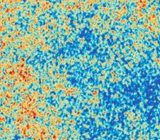
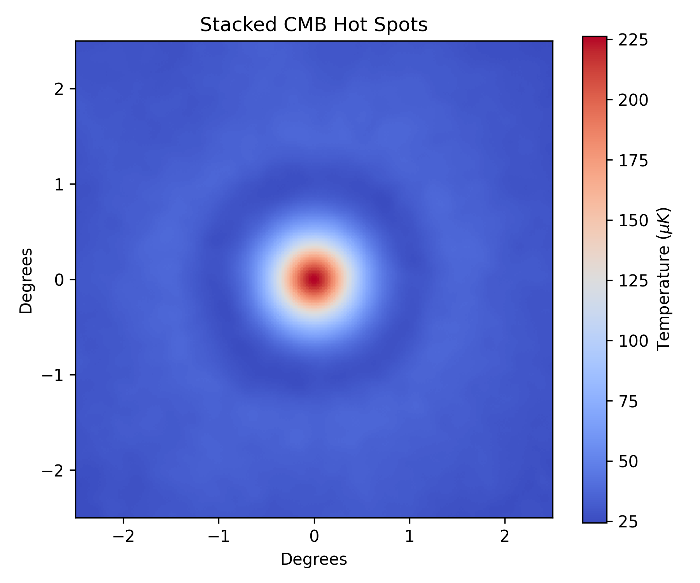

Sounds sounds everywhere, Nor any ear to hear
What causes the CMB pattern?
Modern cosmology exploits the structure hidden in sky signals.
In this section we will describe some of the key elements of the CMB signal and how they tell us about properties of the Universe.

Warming up
A wave spreading out
Consider a stone dropped into a still pond. What will happen? Can we use the process to learn about the pond?
In the above case, a wave will propagate outwards into the pond. The speed of the wave depends on the properties of pond and on the properties of the earth! Studying the speed, height and how the wave decays over time tells us about the depth of the pond, the strength of earth's gravity and the viscosity of water (is it treacly or not).
A cosmic analogy
Cosmic sound waves
The early Universe was mostly filled with a hot uniform plasma, analogous to our initially still pond. In this plasma there were a set of slightly hotter and slightly colder points. Let's think about just one of them. How would it behave?
Just like a stone in a pond! A wave would propograte outwards. Unlike water waves these are not waves on the surface but inside the material like a sound wave moves through the room.
And freeze!
The cooling Universe
The Universe is expanding and as it does so it cools - just like CO2 from a fire extinguisher!
Eventually it cools so much that it can no longer support the plasma. This transition creates the CMB - light that was trapped in the plasma is now free to travel throughout the universe.
Importantly the primordial sound wave is then frozen!
Revealing the cosmic pie
Probing the contents of the Universe
The contents of the Universe dramatically shape the evolution these primordial waves. Whilst complicating our calculations, this makes our observations very powerful! We can determine the Universe's composition!
The above example was a universe composed of normal matter. Our Universe also has a second type of matter dark matter. Dark matter is mysterious and we do not know what it is! We only know that it does not interact with normal matter.
Many waves make light work
A multitude of waves
So far we have discussed one fluctuation and one primordial wave. What happens if we have many of them?
We believe the early universe was filled with these primordial perturbations with each one sending out a sound wave. The waves overlap on top of each other.
Complicated but not lost
Subtle signatures
The resulting composition retains information of the Universe's properties and the imprints of the primordial process.
The subtle structure of the pattern contains a wealth of information. We only need to know how to 'read' it.
Reading the noise
Unlocking the Universe
Simons Observatory researchers work to undo this mixing to study both the composition of the Universe and the processes setting the initial conditions. A simple example of this is shown in the next figure and see here for more detailed information on how we analyze these data.

Acknowledging our insipirations
A word of thanks
These explanations draw from many community resources but significantly from Assistant Professor Adam Hincks. His website, here, provides a more detailed description of these processes and was key to shaping this website. Thanks, Adam! We refer the interested reader there, and the references within, for more details